カードをまとめて扱う
自分と全員の手札を一覧に。ドラッグで渡す・引く操作ができ、公開は確認してから行います。部屋ごとに操作を制限し、不在者の手札はGMが引き継がせられます。

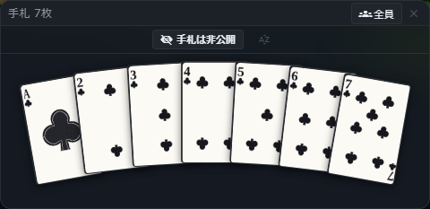

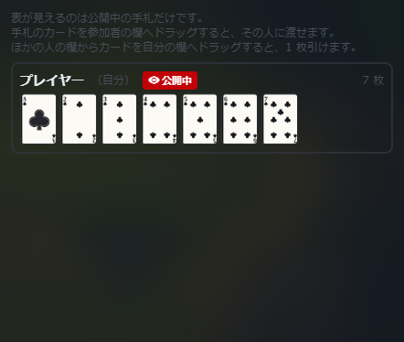
スタンプと絵文字で返す
短い言葉からスタンプを候補表示。絵文字だけの発言は大きく、各発言には絵文字リアクションを付けられます。スタンプはセットで保存でき、キャラクターの頭上にも表示できます。

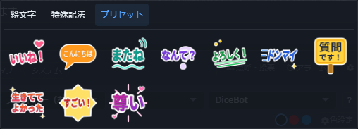

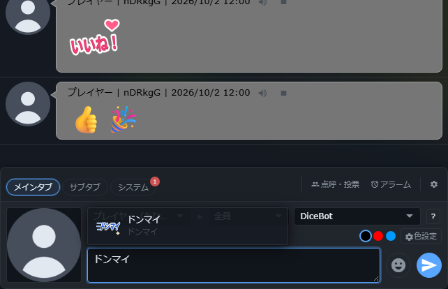

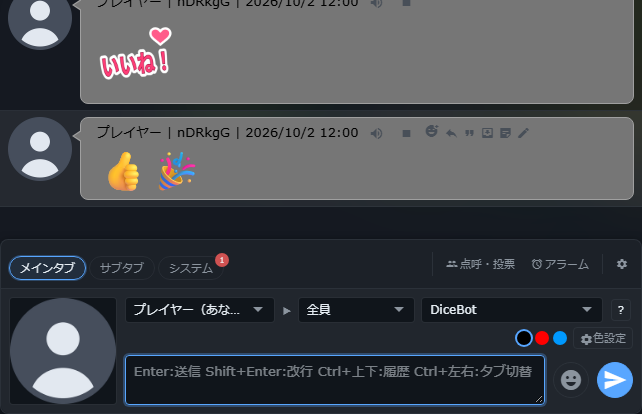
聞く・読み返す方法を選ぶ
ブラウザの音声合成でチャットを読み上げ、声や速度は端末ごとに設定します。ログは装飾付きHTMLと、文字だけのテキストを選んで保存できます。読めない発言は出力しません。

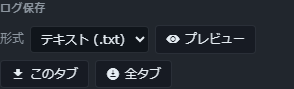
画像を貼って、背景を透かす
ファイル、ドロップ、クリップボードから画像を追加。1枚なら確認画面で背景色を選んで透過できます。卓の画像とスタンプで共通の画像一覧を使います。

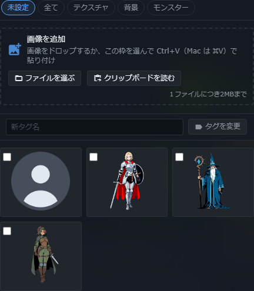

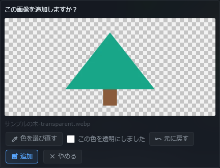
キャラクターが参戦する
カットインへキャラクターの画像と名前を差し込みます。立ち絵を輪郭へドラッグで合わせれば、同じ輪郭を使う演出で再利用できます。画像がない時はシルエットを表示します。

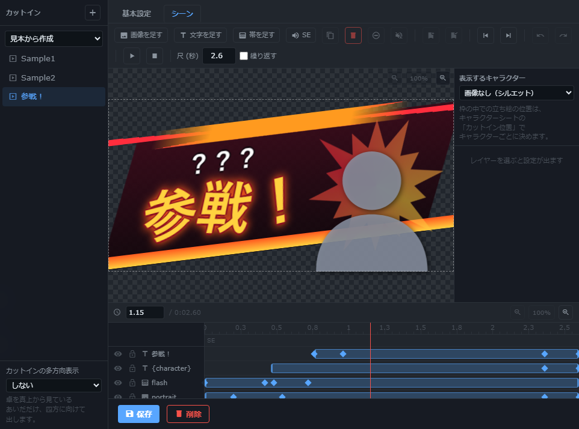

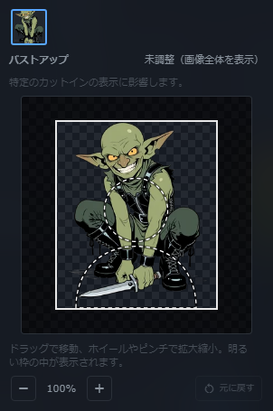
小さな反応を、さっと送る
絵文字、短い文字列、卓の画像を素材にするエフェクト。対象へぽんと出す、投げる、降らせる動きを短時間で再生し、ホットバーにも登録できます。

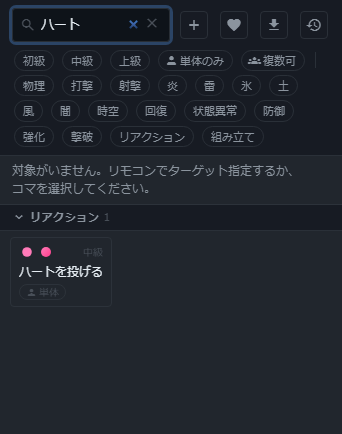

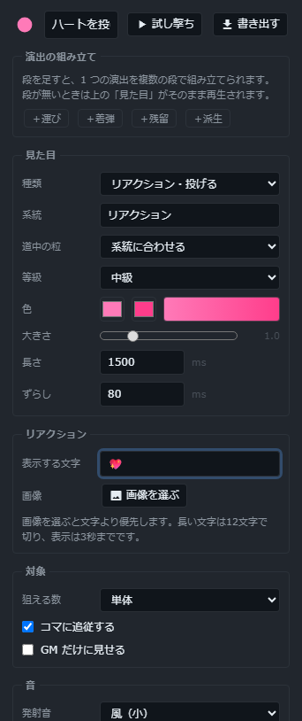
3つの見本から試す
初回のホットバーに、1D100の入力、キャラクターシートの開閉、コマへの視点移動を用意。異なる用途の操作を試し、そのまま編集・削除できます。既存のバーは変更しません。

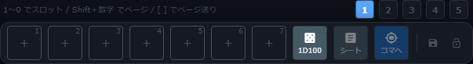
長い共有メモを読みやすく
必要なメモだけ「整形」にして、見出し・箇条書き・引用・コードを使います。数式のアスタリスクは文字のまま。既存のメモは通常表示を保ち、チャットはMarkdown化しません。

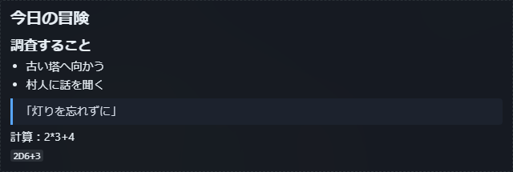
基本から始め、詳細へ進む
カットイン編集のタイムラインや変形設定は、必要な時に開きます。折り畳んでもすべてのレイヤーを選べるので、画像と文字から始めて細かな演出へ進めます。

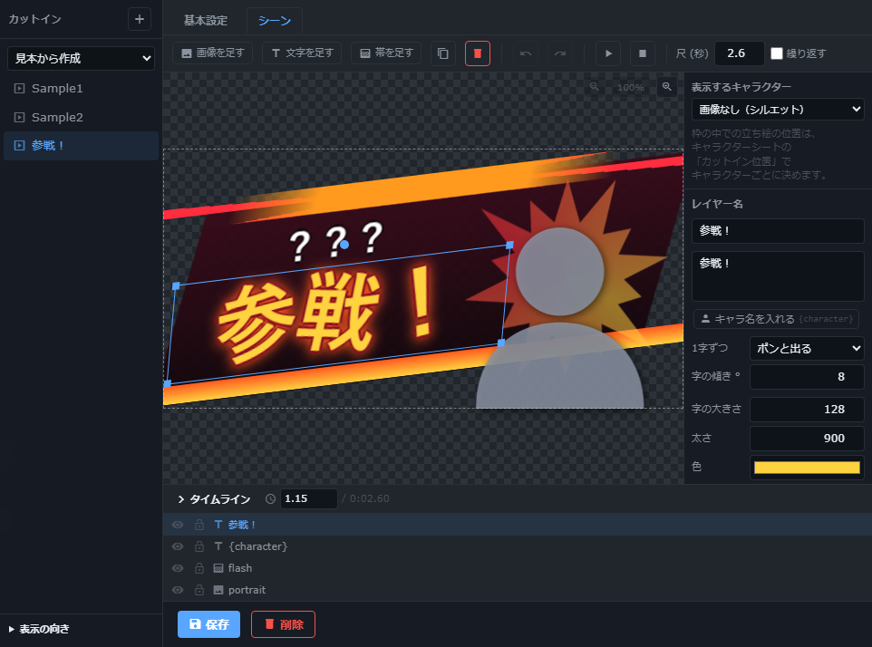

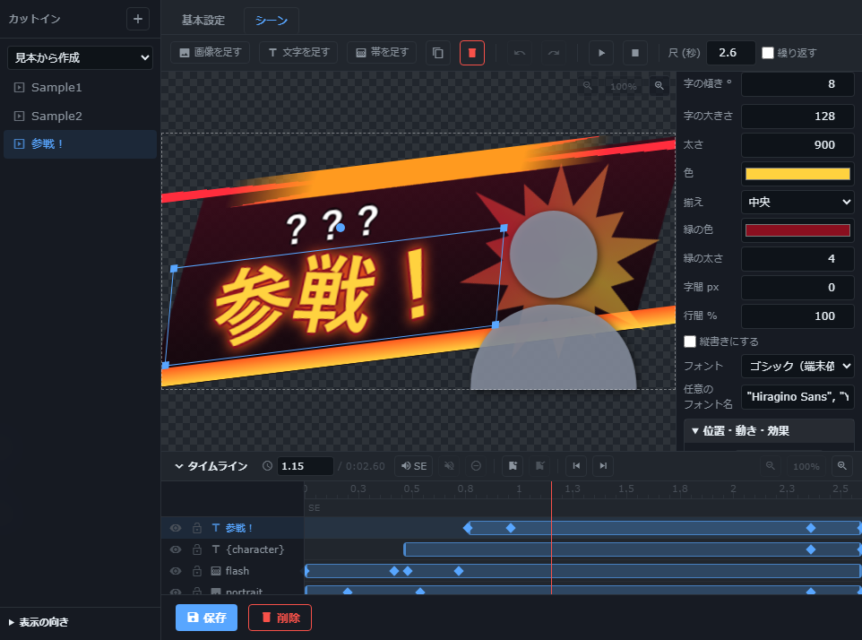
テンプレートと素材集を分ける
新しい卓はSample1・Sample2・Sample_Templateから。短い演出見本は必要なものだけ追加するか、16個の素材ZIPを通常の読み込みで取り込めます。

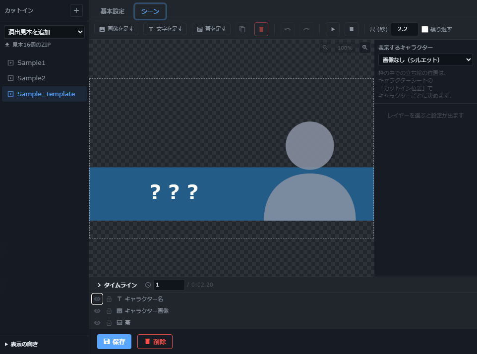

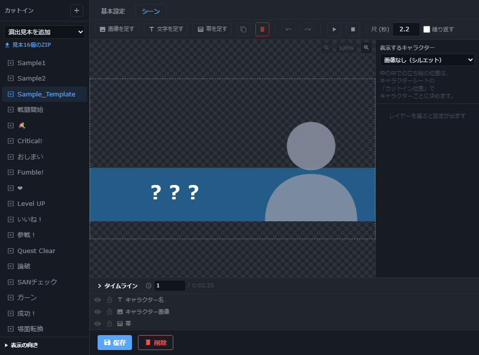
一つの文字列に、字ごとの動き
文章は一つのまま、字が現れる順番・間隔・方向・傾き・退場を選べます。簡単な見本ボタンから始め、細かな設定は必要な時に開きます。

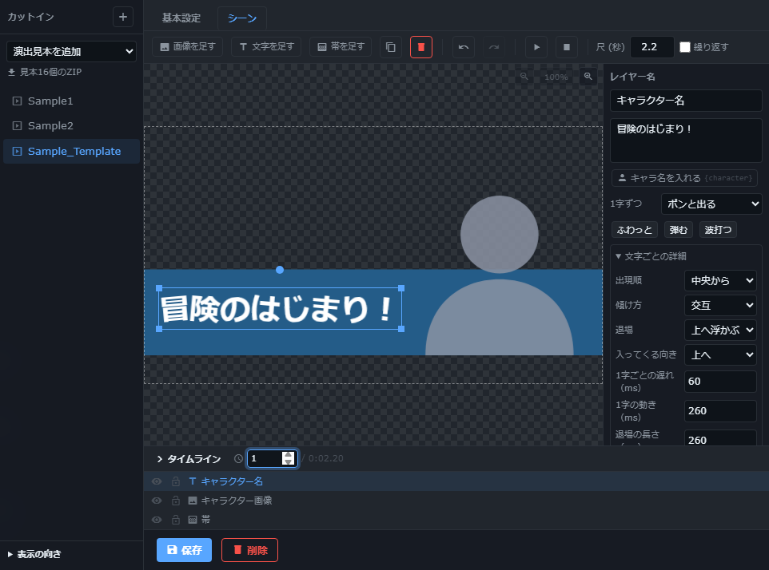
ルビを半角で入力
|漢字<かんじ> と半角で入力できます。従来表記も残し、読み上げ・ログ・吹き出しでの読み方を揃えます。

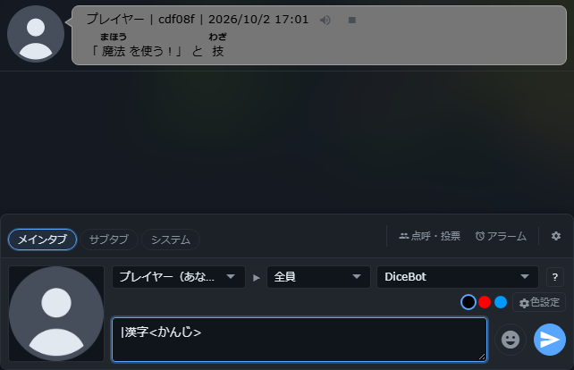
一枚の絵から、部位ごとのコマ
画像をドラッグで囲み、部位ごとの名前を付けて作成します。HPや移動は各コマで独立し、元画像も残ります。通常の卓データとして保存できます。

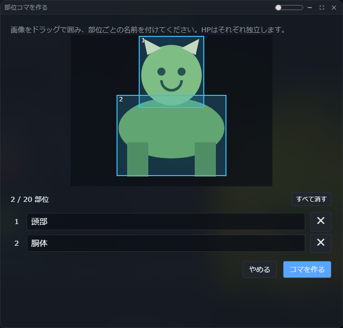